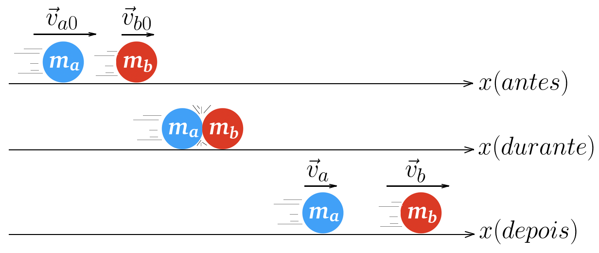
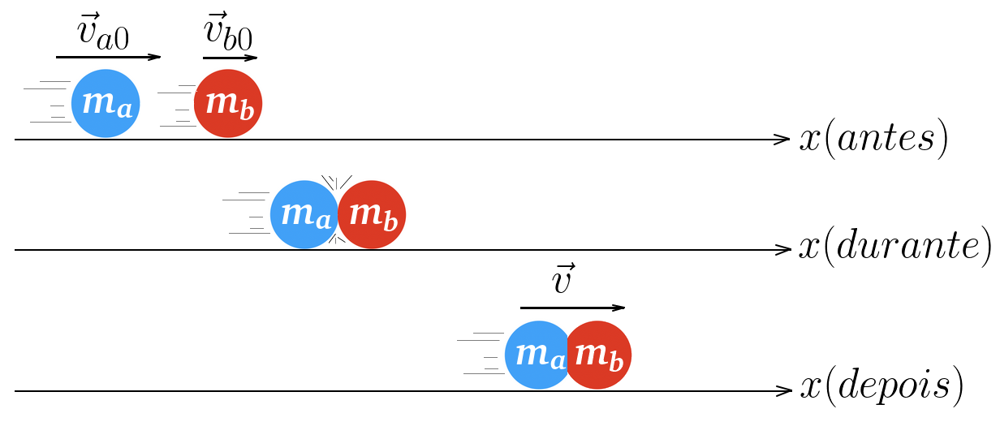

Aula2-25: Colisões
Colisões — também chamadas de choques mecânicos — são interações entre dois ou mais corpos que ocorrem em um intervalo de tempo muito curto e, em geral, envolvem forças muito intensas.
Podemos dividir uma colisão em três fases: antes, durante e depois do choque. Durante a colisão, as forças trocadas entre os corpos são tão intensas e duram tão pouco que as forças externas se tornam desprezíveis; por isso, o momento linear total do sistema se conserva — ele é o mesmo antes, durante e depois da colisão. Já a energia cinética pode ou não se conservar: se ela se conserva totalmente, a colisão é perfeitamente elástica; se apenas parte dela se conserva, a colisão é parcialmente elástica; se a perda de energia cinética é a máxima possível e os corpos seguem unidos após o choque, a colisão é totalmente inelástica.
➔ COEFICIENTE DE RESTITUIÇÃO
O coeficiente de restituição é a razão entre o módulo da velocidade relativa de afastamento dos corpos (depois do choque) e o módulo da velocidade relativa de aproximação (antes do choque). Esse coeficiente indica, de forma indireta, quanta energia cinética se conserva na colisão: seu valor fica entre 0 e 1 e, quanto mais próximo de 1, maior é a parcela de energia cinética conservada.
|
 |
Na situação da figura, o corpo a alcança o corpo b — a velocidade de a é maior que a de b. A velocidade relativa de aproximação (antes do choque) é então: De modo análogo, a velocidade relativa de afastamento (depois do choque) é calculada por: |
Colisões perfeitamente elásticas
Nesse tipo de colisão, os corpos se deformam momentaneamente durante o contato, como se fossem molas: parte da energia cinética é transformada, temporariamente, em energia potencial elástica. Em seguida, essa energia é totalmente devolvida, de modo que a energia cinética total do sistema é a mesma antes e depois do choque. Os corpos não ficam unidos: eles se separam após a colisão.
➔ COEFICIENTE DE RESTITUIÇÃO PARA COLISÕES PERFEITAMENTE ELÁSTICAS
Em uma colisão perfeitamente elástica, o coeficiente de restituição vale:
➔ EQUAÇÃO DAS VELOCIDADES FINAIS PARA COLISÕES ELÁSTICAS
MEDIDA DO COEFICIENTE DE RESTITUIÇÃO - COLISÕES ELÁSTICAS: DEMONSTRAÇÃO
Como o momento linear total do sistema se conserva, podemos escrever:
eq.(1)
Reescrevendo a equação, temos:
, eq. (2)
Considerando que a energia cinética total do sistema também se conserva, podemos escrever:
Reescrevendo a equação, temos:
, eq. (3)
Para relacionar as velocidades iniciais com as finais, dividimos a equação (3) pela equação (2):
, eq. (4)
Observe que a equação (4) mostra que a velocidade relativa de aproximação (antes do choque) é igual à velocidade relativa de afastamento (depois do choque). Isso faz sentido: como a energia cinética do sistema se conserva, os corpos se separam com a mesma rapidez relativa com que se aproximaram.
FÓRMULA DAS VELOCIDADES FINAIS - COLISÕES ELÁSTICAS: DEMONSTRAÇÃO
eq. (1):
eq. (4):
Agora, substituímos a expressão de v_b, obtida da equação (4), na equação (1):
, eq. (5)
Para obter a velocidade final do corpo b, basta substituir a equação (5) na equação (4).
Colisões totalmente inelásticas
Nesse tipo de colisão, os corpos ficam deformados e seguem unidos após o contato, movendo-se juntos com a mesma velocidade. É nesse caso que ocorre a maior dissipação possível de energia cinética: nenhum outro tipo de colisão perde tanta energia cinética.
|
 |
COEFICIENTE DE RESTITUIÇÃO Como os corpos seguem juntos, a velocidade relativa de afastamento é nula e o coeficiente de restituição também é nulo: |
Para obter a velocidade final do conjunto, aplicamos a conservação do momento linear:
Portanto, a velocidade do conjunto após o choque é:
➔ VARIAÇÃO DE ENERGIA CINÉTICA
Desenvolvendo a expressão, obtemos:
Observe que essa variação é sempre negativa: em uma colisão totalmente inelástica, a energia cinética final é sempre menor que a inicial.
Colisões parcialmente elásticas
Na colisão parcialmente elástica, parte da energia cinética é dissipada — transforma-se em calor, som e deformações —, mas os corpos não ficam unidos após o choque: eles se separam, porém com alguma perda de energia. Nesse caso, o coeficiente de restituição fica entre 0 e 1.
É o tipo mais comum no dia a dia: uma bola que quica no chão algumas vezes antes de parar, ou a batida entre bolas de sinuca, são exemplos de colisões parcialmente elásticas.